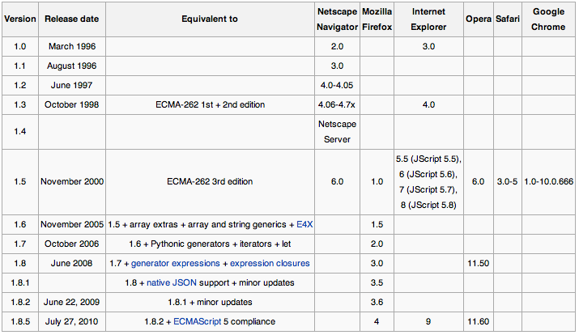
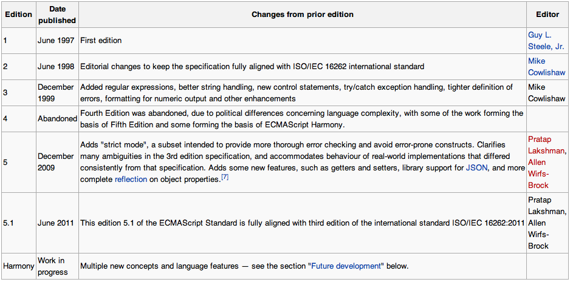
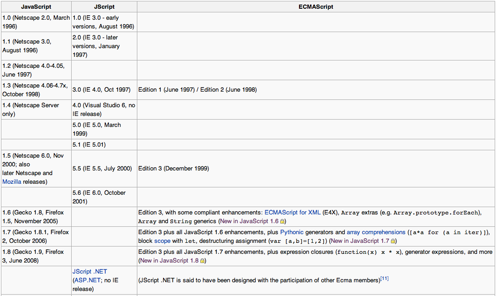

Dive Into JavaScript
1What's is JavaScript ?
- was developed by Brendan Eich of Netscape under the name Mocha, which was later renamed to LiveScript, and finally to JavaScript because a joint announcement with Sun Microsystems on December 4, 1995
- dynamic, weakly typed, prototype-based scripting language
- ECMA International create ECMAScript specification based on JavaScript from Netscape
- works in both of client and server side
var obj = new Object
obj.property1 = 1
obj.property2 = function(){
console.log(obj.property1);
};
What is JavaScript ?

highlight: ECMAScript 1st + 2nd edition at Oct. 1998, 3rd edition at Nov. 2000.
ECMAScript History

wiki address: http://en.wikipedia.org/wiki/ECMAScript
JavaScript/ECMAScript Version Mapping

wiki address: http://en.wikipedia.org/wiki/ECMAScript
JavaScript Objects
In JavaScript, almost everything is an object. All primitive types except null and undefined are treated as objects. They can be assigned properties (assigned properties of some types are not persistent), and they have all characteristics of objects.
- Function
- Object
- Number
- String
- Boolean
- Date
- Array
- RegExp
JavaScript Objects
Function
Every function in JavaScript is actually a Function object.
// synax new Function ([arg1[, arg2[, ... argN]],] functionBody)
// example var myFunc = new Function(['a'], 'this.inner = a;');
Important Property
prototype property allows the extension of all Function objects. And every function object have the property.
myFunc.prototype.hello = function(text){
console.log('Hi,' + text);
}
JavaScript Objects
Object
A instance of Function used to creates an object wrapper for the given value. If the value is null or undefined, it will create and return an empty object, otherwise, it will return an object of a type that corresponds to the given value.
new Object(value)
// example
var bool = new Object(true);
var num = new Object(1);
var string = Object('string');
prototype property allows the extension of all objects.
How To Create A Object
- Using function object
var obj = new Clazz(1, 2, 3);
- A easy way for 'new Object'
var obj = { property : 1 }; -
Using Object.create method(JavaScript 1.8.5/ECMAScript 5th Edition)
// var obj = Object.create(proto, propertiesObject); var obj = Object.create({ property : 1 }, { p: { value: 42 } }); obj.p // 42 Object.getPrototypeOf(obj).property // 1 obj.__proto__.property // 1
Prototype-based JavaScript
constructor
constructor property is the function object to create the object's prototype(__proto__). All objects inherit a constructor property from their prototype.
// Build-In Class
var obj = new Object;
obj.hasOwnProperty('constructor'); // false
obj.constructor; // function Object() { [native code] }
// Custom Class
function MyClass(){}
var myObj = new MyClass;
myObj.hasOwnProperty('constructor'); // false
myObj.constructor; // function MyClass(){}
// Function.constructor
Function.hasOwnProperty('constructor'); // false
Function.prototype.constructor === Function; // true
Prototype-based JavaScript
prototype
Every instances inherit from it's prototype. And the prototype property defined in the object's constructor. In another word, every function object have prototype property.
function MyClass(){}
MyClass.prototype; // { constructor : MyClass, __proto__ : Object.prototype }
MyClass.hasOwnProperty('prototype'); // true
MyClass.prototype.hello = function(){};
var myObj = new MyClass();
myObj.constructor === MyClass; // true
myObj.hello // function(){};
Prototype-based JavaScript
__proto__ / Object.getPropertyOf(obj)
property value is a reference to its prototype object. Generally, the value will be the prototype value of the constructor of this object.
var myStr = 'abcd'; myStr.constructor === String; // true myStr.__proto__ === String.prototype; // true // interesting, why? (1).__proto__ == 0;
But there are 2 special exceptions.
Object.prototype.__proto__ === null; // true
function MyClass(){} // cunstom or native function object like Array, Number
MyClass.prototype.constructor === MyClass; // true
MyClass.prototype.__proto__ === MyClass.prototype; // false
MyClass.prototype.__proto__ === Object.prototype; // actually, it's true
{kind=link}